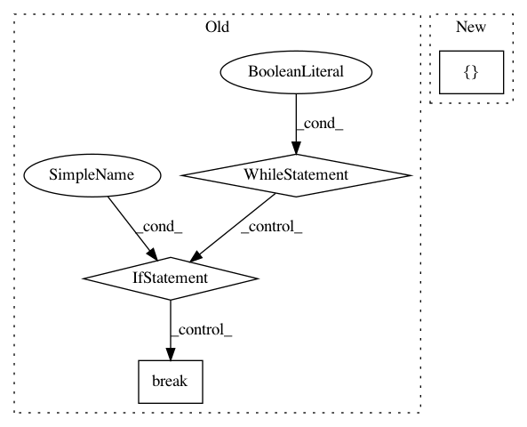

bd333dd43d69b26015eb3f201afe1772ba701a41,niftynet/contrib/dataset_sampler/sampler_uniform_v2.py,UniformSampler,layer_op,#UniformSampler#Any#,83
Before Change
:return: output data dictionary ``{placeholders: data_array}``
while True:
image_id, data, _ = self.reader(idx=idx, shuffle=True)
if not data:
break
image_shapes = dict((name, data[name].shape)
for name in self.window.names)
static_window_shapes = self.window.match_image_shapes(image_shapes)
// find random coordinates based on window and image shapes
coordinates = self._spatial_coordinates_generator(
subject_id=image_id,
data=data,
img_sizes=image_shapes,
win_sizes=static_window_shapes,
n_samples=self.window.n_samples)
for window_id in range(self.window.n_samples):
output_dict = {}
for name in list(data):
image_data_key = name
coordinates_key = LOCATION_FORMAT.format(name)
coord = coordinates[name][window_id]
x_start, y_start, z_start, x_end, y_end, z_end = coord[1:]
try:
image_window = data[name][
x_start:x_end, y_start:y_end, z_start:z_end, ...]
output_dict[image_data_key] = image_window
output_dict[coordinates_key] = coord
except ValueError:
tf.logging.fatal(
"dimensionality miss match in input volumes, "
"please specify spatial_window_size with a "
"3D tuple and make sure each element is "
"smaller than the image length in each dim. "
"Current coords %s", coord)
raise
yield output_dict
def _spatial_coordinates_generator(self,
subject_id,
data,
img_sizes,
After Change
output_dict[coordinates_key] = location_array
// fill output window array
image_array = []
for window_id in range(self.window.n_samples):
x_start, y_start, z_start, x_end, y_end, z_end = \
location_array[window_id, 1:]
try:
In pattern: SUPERPATTERN
Frequency: 3
Non-data size: 4
Instances
Project Name: NifTK/NiftyNet
Commit Name: bd333dd43d69b26015eb3f201afe1772ba701a41
Time: 2018-05-07
Author: wenqi.li@ucl.ac.uk
File Name: niftynet/contrib/dataset_sampler/sampler_uniform_v2.py
Class Name: UniformSampler
Method Name: layer_op
Project Name: keras-team/autokeras
Commit Name: 278f71a4b7b4f0b6ada8f78d71dbfd8947ab405e
Time: 2017-12-18
Author: wangtaoo665@gmail.com
File Name: autokeras/generator.py
Class Name: HillClimbingClassifierGenerator
Method Name: generate
Project Name: OpenNMT/OpenNMT-py
Commit Name: 7b205efea6b504de04311bc55d109cd28d8f3e0c
Time: 2016-12-21
Author: alerer@fb.com
File Name: OpenNMT/preprocess.py
Class Name:
Method Name: makeVocabulary